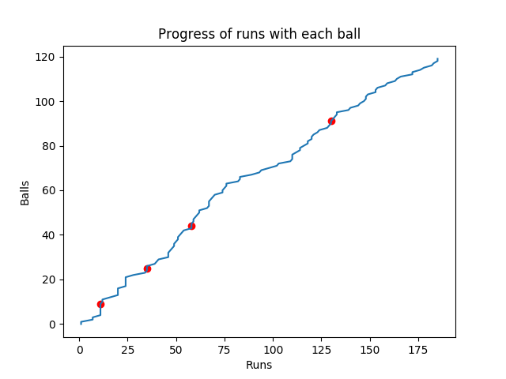

| Batsman | R | B | 4s | 6s | SR | |
|---|---|---|---|---|---|---|
| David Warner | C Uthhapa b A Russell | 85 | 53 | 9 | 3 | 160.38 |
| David Warner | C Uthhapa b A Russell | 85 | 53 | 9 | 3 | 160.38 |
| David Warner | C Uthhapa b A Russell | 85 | 53 | 9 | 3 | 160.38 |
| Fall of Wickets | 152-3 (Yusuf Pathan, 17.3), 152-3 (Yusuf Pathan, 17.3) |
|---|
| Bowler | O | M | R | W | NB | WD | ECO |
|---|---|---|---|---|---|---|---|
| Prasidh Krishna | 4 | 0 | 31 | 0 | 1 | 2 | 7.75 |
| Prasidh Krishna | 4 | 0 | 31 | 0 | 1 | 2 | 7.75 |
Fastest Bowler?
Biggest Six?
Did you really expect one more?Person 